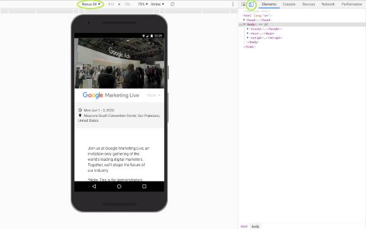

Style Demos
-
Video Hero Next Style, White margin
-
Video Hero Top Navigation
Navigation tranparent background, white after scrolling down
-
Video Hero Bottom Navigation
Navigation black gradient background, white after scrolling
Enlarged GML logo, shrinks after scrolling
Mobile Nav below video instead of overlay
Nav bar sticks to top after scrolling farther
-
Countdown Clocks
Preview As Mobile
In Chrome:
- Open Dev Tools (ctrl + shift + i )
- Open device toolbar (click button or ctrl + shift + m)
- Choose a mobile device from dropdown menu
- (optional) Toggle device frame in 3-dot menu.
